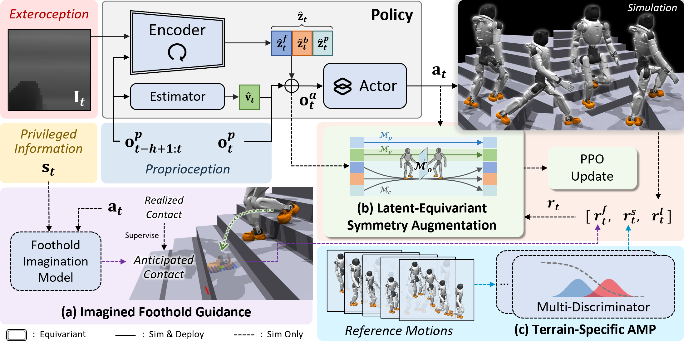

SSR Scaling Surefooted and Symmetric Humanoid Traversal to the Open World
Stairs: Varied Structures
SSR stably traverses diverse stair structures, including narrow open-riser stairs and spiral staircases.
High Platforms
Gaps
Grassy Slopes
Perturbation Robustness Test
Stair Push Recovery
Trolley Disturbance Rejection
Out-of-Distribution Generalization
Slippery Trolley
Perforated Grids
Movable Pallets
Long-Horizon Traversal in the Open World
The robot completes a continuous 1.3-km open-world traversal in 40 min.
This video has been trimmed and sped up for brevity.
The clips above provide close-up views of open-world traversal. Hover over any clip to view it at normal speed.
Cross-Platform Deployment
The full-size humanoid robot stands 1.8 m tall and weighs 70 kg.
Abstract

Extending humanoid traversal to open-world human environments is essential for real-world deployment, yet remains challenging. The robot must rely on egocentric vision to achieve safe and reliable foot placement on heterogeneous terrain under highly dynamic motion, while maintaining coordinated and natural whole-body behaviors.
To better address this problem, we propose SSR, an efficient end-to-end framework for egocentric vision-based humanoid traversal. SSR introduces imagined foothold guidance to model forthcoming swing-foot contacts and support regions, reducing edge slips by guiding pre-touchdown swings toward stable areas. It further combines compact equivariant latent-space symmetry augmentation with terrain-specific multi-discriminator motion priors to improve bilateral coordination and preserve human-like behaviors across diverse scenes.
Extensive experiments show that SSR transfers safe, stable, and high-quality traversal to diverse real-world terrains, including stairs with varied structures, wide gaps, and high platforms. The learned policy further enables reliable long-horizon traversal in open outdoor environments, demonstrating robust generalization beyond controlled laboratory settings.
BibTeX
@misc{yu2026ssr,
title={SSR: Scaling Surefooted and Symmetric Humanoid Traversal to the Open World},
author={Yu, Ruiqi and Wang, Yiwen and Hao, Yuan and Wu, Jun and Zhu, Qiuguo},
journal={arXiv preprint arXiv:2605.xxxxx},
year={2026}
}